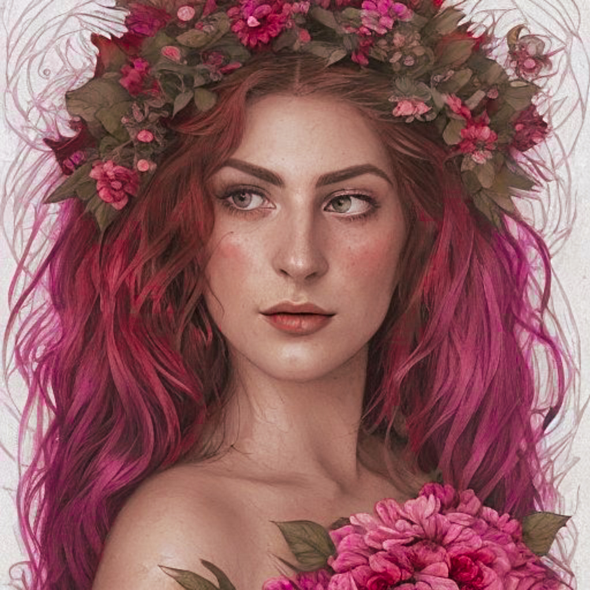

Currently Consuming
Pulling your recent Steam activity...
digital hub · gaming · beauty · experiments
A home base for the things I make, track, test, and obsess over.
Mostly PC. Solo only. No first-person. I like building things with just enough management depth to feel satisfying.
recently played
Pulling your recent Steam activity...
Comfort Rotation
loading
Pulling your most-played Steam games...
what I look for

I'm a makeup artist, SEO manager, gamer, and chronic researcher of products, systems, and tiny details.
This hub is where where all the side quests live: tools, game ideas, beauty notes, experiments, and whatever else I decide needs its own little corner.